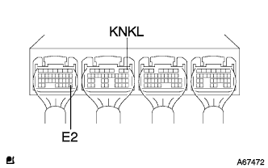
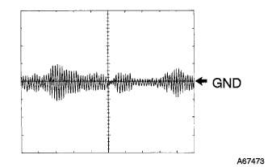
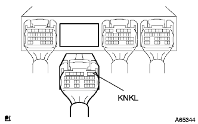

DTC P0325/52 ノックセンサ系統1 |
| DTC No. | DTC検出条件
| 点検部位 |
| P0325/52 |
|
|
| 手順1 | エンジンコントロールコンピユータ単体点検 |
|  |
TaSCANをエンジンコントロールコンピュータのコネクタB1(KNKL)←→A28(E2)端子間を接続する。(端子配列は参照)
|  |
TaSCANをオシロスコープ機能にセットする。[セット方法については、TaSACAN取扱説明書を参照]
| 項目 | 内容 |
| 測定端子 | KNKL←→E2 |
| 計器セット | 0.5V/DIV、1ms/DIV |
| 測定条件 | 暖機後、エンジン回転数4000r/minで保持 |
|
| ||||
| NG | |
| 手順2 | センサ取り付け部点検 |
ノツクコントロールセンサの取り付け状態を点検する。
|
| ||||
| OK | |
| 手順3 | ワイヤハーネスまたはコネクター点検（エンジンコントロールコンピユータ-ノツクコントロールセンサ） |
エンジンコントロールコンピユータのコネクタBおよびノツクコントロールセンサのコネクタを切り離す。
|  |
トヨタエレクトリカルテスターを使用して、エンジンコントロールコンピユータの車両側コネクタ←→ノツクコントロールセンサの車両側コネクタの導通および短絡を点検する。(端子配列は参照)
| 測定基準(端子名) エンジンコントロールコンピユータ←→ノツクコントロールセンサ | 基準 |
| B1(KNKL)←→1(KNKL) | 導通があり他の端子間およびボデーアース間と短絡がないこと |
|
| ||||
| OK | |
| 手順4 | ノツクコントロールセンサ交換 |
ノツクコントロールセンサを交換する。
DLC3にTaSCANを接続する。
イグニッションスイッチをONにして、TaSCAN画面表示に従ってダイアグノーシスコードを消去する。
走行テストを行う。
| GO | |
| 手順5 | ダイアグノーシスコード読み取り |
DLC3にTaSCANを接続する。
イグニッションスイッチをONにして、TaSCANの画面表示に従ってダイアグノーシスコードを読み取る。
DTC P0325/52が出力されているか確認する。
| A | B |
| P0325/52は表示 | P0325/52は表示されない |
|
| ||||
| A | ||
| ||